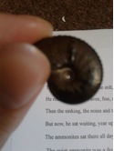

Cambridge University’s Faculty of Education engage Early Years and Primary PGCE trainee teachers with a range of settings for learning other than school. Helen Davidson spent the last week of her training in museums and was inspired by meeting Thresholds poet Matthew Hollis at the Sedgwick Museum.
Having spent the last week of my PGCE Primary training on a whirlwind tour of various Cambridge museums – mainly the Fitzwilliam – I find myself spellbound and tongue-tied. More than this, I am ‘spiral bound’. The title is ironic, at least in part, because I find the idea of a neatly-presented, coherent write-up of the week, at this stage, completely unthinkable! More importantly, however, it gestures towards the nature of any museum experience. It is not a neat linear progression: ‘ah, now I understand museums and how to use them with children’. Rather, idea connects to idea and before you know it your reflections spiral, often inward, in an attempt to understand and develop a deeper personal connection with the artefacts. By ‘spiral bound’, then, I mean that I am inevitably drawn into a journey of forging connections, but also simply fascinated by the perpetual draw of real objects, natural and human-created artefacts. So, I shall flick through my spiral-bound sketch book and share a sample of my impressions of the week…
As an English graduate, I begin with a poem, Louis Macneice’s ‘The British Museum Reading Room’. Although the line ‘Some are too much alive and some are asleep’ might seem the most appropriate to a school trip to the museum, the children I saw were ‘Folded up in themselves in a world which is safe and silent’. This hints at the overarching tension lying at the heart of all of the Cambridge museums I visited this week: their very silence has a powerful sort of voice and children entering this space are given the opportunity, in this ‘safe and silent’ world, to find their own voices.
On Monday, my fellow trainee, Peter, and I spent the day roaming around various museum settings. We visited the Museum of Cambridge (was Folk Museum) and spent the morning exploring social history in a 17th century timber-framed building which spent many years as an inn. This collection, being formed almost entirely of everyday objects, finds its source in a deep human need to share stories about our experiences. It is easy to see how this museum makes connections with the children’s own lives and can offer them a wonderfully active and tactile experience of the past that is contextually embedded. The starkness of the Museum of Classical Archaeology by comparison highlights an important difference. These statues of the idealised human form were godlike and distant: we are not meant to identify with them but to aspire and wonder. And wonder we did, wandering between the statues and exploring them from every angle.
We were then treated to a private tour of the Sedgwick Museum which involved examining some myths and legends surrounding this awe-inspiring collection, and thinking about some of the ways into geology that make this erudite and seemingly inaccessible area exciting and available for even very young children. There was, for example, a story kit to tell children about Darwin’s adventures on HMS Beagle with a beautifully crafted blanket in all sorts of colours and textures with secret pockets containing coral, rocks and fossils for children to explore. We were also lucky enough to have the chance to speak to Matthew Hollis, the poet-in-residence at the Sedgwick Museum as part of the Thresholds project. He is yet another hugely inspiring figure and gave us some insight into another way of making connections. He spoke of the role of the poet in days gone by as a figure of great political and social importance, passing on ideas, weaving the stories we tell about ourselves and others (a role now shared with museum educators, it would seem). Matthew was also fascinated by the stories we tell about objects; the mythology surrounding the rocks and fossils in the Sedgwick Museum.

On Thursday evening I attended Matthew’s poetry reading at the museum and listened to his incredible poem, ‘The Stone Man’. I could not help but consider the poem itself as artefact, with its rich evocation of the weight of words, the physicality of printing technology, the design of the written word as an extension of our everyday speech. The tension between the artifice of purposeful poetic creation and the natural fluency of human speech was particularly powerful in the setting of the Sedgwick museum, surrounded by fossils and rocks with their own human stories to tell: the much discussed ‘real objects’.
Over the course of our four days at the Fitzwilliam we were able to observe a number of education sessions all of which facilitated children’s direct engagement with the collection, through questioning which encouraged close observation. Whilst the children demonstrated an obvious respect for the gallery educator’s expertise, they were also empowered to discover and unpack their own responses. A phrase used by one of the museum educators struck me in this regard, as she spoke of respecting the early years audience ‘as interpreters of art on their own terms’. She and others used storytelling as a familiar bridge to the unfamiliar. There was a palpable shift in emphasis: by literally putting their ideas first, before the presentation of any factual information about the artefact, the application of the children’s interpretative skill and the validation of their individual responses became the focus of the session: “anything they pick up about the ancient Greeks is a bonus!”
This persistent focus on empowering young audiences was consistent across the age range, including during a fantastic Widening Participation session for a group of Year 10s. Below is my attempt at an outline of Peter’s profile, drawn (without looking at the page) in one sculptural motion… You’ll have to take my word for it that it is an excellent likeness, if a little Neanderthal. The exercise was part of a wider exploration of identity in art which involved generating rules or conventions which appear to have guided expressions of reputation in ancient civilisations; iconography in Medieval and Renaissance religious art; and the human search for natural forms in abstract shapes in contemporary art.
Had Ian asked for their ideas about these subject areas, I would imagine he would be met with blank looks and shifting feet. As it was, he asked for first impressions and involved them with drawing activities on the gallery floor (surrounded by the artworks themselves) which unearthed a wealth of responses, connections and knowledge upon which to build, and encouraged these young people to consider themselves as artists and interpreters.
It is telling that the most powerful experience of all this week, for me, was being handed an 80 million year old ammonite of my very own. This tapped into that basic human instinct for collection which is shared by children and museum curators alike. I wrote a short rhyming story, ‘The Quiet Ammonite’, which I hope to use to encourage children’s curiosity about the world around them. I wrote holding the ammonite as my talisman (he’s an old hand at that sort of thing) and staring into the tiny spiral. This week has implications for my future practice and will no doubt lead to a shift in emphasis in my teaching as I continue to reflect. Above all, it has filled me with hope that the objects, poems and stories that I share with children in the future, in the classroom and in the museums of Cambridge and beyond, will leave them, as they leave me, ‘spiral-bound’.
Inspired by an Event in the Cambridge University Museum of Archaeology and Anthropology (MAA): Threshold Poets in Residence present Work in Progress 19th March 2013 – readings from the Poets in Residence in 3 of the 10 University of Cambridge Museums namely, Daljit Nagra at the Museum of Archaeology and Anthropology (MAA), Ann Gray at the Botanic Gardens and Jo Shapcott at The Polar Museum and the young people who had been writing alongside them, all taking their inspiration from the different collections.
I wound my way around the Anthropological galleries of the MAA before the poetry event and found myself drawn towards a long, low display case containing an impressively preserved one-man Inuit kayak. Traditionally only men hunted in these craft. They were made from seal skins scraped and stretched, then dried and sown by a woman, usually the wife of the hunter. This particular craft, belonging to a long-dead Inuit family, was used to hunt all manner of sea mammals. Seal, walrus and even the huge bowhead whale whose migrations took them swimming in regal calm up and then down the Arctic Ocean; through its upper reaches, the Chutkin Sea and its lower, the Bering Sea. They swam, dove, surged, whirled, flipped and basked in annual procession around Barrow, Point Hope, Sitka Island, St Lawrence Island, the Aleutians Islands and the whole Gulf of Alaska which comprises the waters between the old Russia to the West and the new American state of Alaska to the East.
The surface of the kayak shows clearly the joins of the animal skins; patterns like cracks on ice, respecting the economy of shape of each skin taken from different sized seals. No fixed geometry but an organic meshing; these joins are beautiful, poignant. The hunter-owner would have recognised each skin he looked at from his round seating-hole lined with thick fur, each kill a memory, an emotion. At least he would have, before the advent of the 5th Disaster of the Inuit.
Suspended above the display of the kayak, a short row of panels reveal the testaments of three different witnesses in varying contexts whose special significance we are left to guess at. From left to right, the panels share the testimonies of Elijah Kabinya to the Elders’ Conference of 1978, Patrick Attungana to the Alaska Eskimo Whaling Commission 1985 and William A Ocquillik’s accounts of stories from his ancestors ‘The People of Kauwerak’ 1981 Alaska Pacific University Press. It is this last narrator who refers to the Four Disasters of the Inuit, and he adds a Fifth on his own initiative.
The first panels tell of an Inuit Origin Myth – a solitary and dedicated hunter spears a bowhead which is so immense ‘it has growing things on it’. The next speak of their whaling traditions, the strange ‘camping’ habits of migratory whales – an anthropomorphism for the way an individual whale will sometimes seem to stop close to an inhabited island, or even alongside a whaler and allow itself to be caught while the rest of the pod continue their migration. ‘It is hard to explain what it is like when a whale gives itself to you unless you see it’ .
All of these held my attention, but in the short time before seeing these exhibits and the beginning of the poetry event, the ones which stayed with me most, becoming as much a part of the event for me as the readings which followed, were the last two panels which told the stories of the Four Disasters of the Inuit. In William A Ocquillik’s words, ‘The Eskimo Ancestors did not have to work in their minds to stay alive. That is, they did not have to think about how to use their tools or use their resources around them to survive. Before the First Disaster they did not need to!’
The First Disaster is described as the sun moving behind the moon for three days and everything being killed by the cold: ‘all the plants, grass, fruits, berries and birds and animals were dead’. Only four families survived. This First Disaster prompted people to think, ‘work in their minds to stay alive’. They observed more closely how animals and plants catch food and master how to move faster or further with least effort. The spider’s web inspired fishing nets; a dry water-willow leaf falling onto the river and being carried swiftly by the wind across the water ‘in no time’ inspired the light-weight kayak.
The First Disaster expels the people from a state of innocence where nothing needed to be thought about and where there was no need to fear annihilation. Now, they begin to have to work, but more in mind than body. They had already been working hard in body (unlike Adam and Eve). They experiment and build and survive.
The Second Disaster is described as a great flood. But although only three families survive and they are said to have developed better ways to live, there is no fundamental change of culture as wrought by the First Disaster. This time there seemed no need for radical change. Their vulnerability was, for now, as fool-proofed against natural disasters as it could be.
The Third Disaster is described as a long period of extreme cold lasting 18 months, this time due to northerly winds bringing rain and flood followed by ice. People starved. Two survivors at the ‘upper end of the Tuksuk Channel, three at Sinruk, two at Cape Derby’. Nor does much change after this one.
Alaska and the Canadian Arctic along with its neighbour on the other side of the Ocean, the Kamchatka Peninsula make up one of the most geologically chaotic places on the planet. Between them, they share countless active volcanoes, both on land and lined up along the submerged rims of the ocean ridges. A major subduction zone on the Ocean bed creates frequent earthquakes and tsunamis. The Inuit oral history of the Disasters, in which the perspective of time is foreshortened, is the trace in tribal memory of the terrible power these events; but only up to the time of the Third Disaster. The Fourth and Fifth Disasters, although not geological events in origin, arise directly from the crossing of geological process with human destiny. No longer is Disaster the result of the unceasing evolutionary story of the Earth but of the story of human development.
The Fourth Disaster sees disease being carried to Inuit shores from the growing influx of foreign ships. At first it was not disastrous. However, in 1918, migrant miners from the south, bring the influenza virus with them. Many, many Inuit children ended up being placed in Mission Orphanages and sometimes older Inuit left altogether, ‘going Outside’. This Fourth Disaster carried with it the seed of the Fifth. ‘The Fifth disaster is now’ says William A Ocquillik. ‘These children no longer learned about the life of their forefathers’. This dispersal of the Inuit began the gradual loss of their traditional oral tradition and its central role in the preservation of their culture.[1]
Perhaps the Sixth Disaster is in waiting and gathers momentum. The 19th century gold-diggers were equipped with picks and pans, rumour and luck, guts and greed and the constant accompaniment of deadly cold and the constant craving for food. The 20th and 21st Century prospectors are insulated and well-fed. They have the technology of progress at their command so where there is mining wealth they will find it quickly, accurately, reliably, quantifiably. Nowadays all the modern prospectors and the primitive ‘Klondikers’ have in common is goggle-eyed greed. . William A Ocquillik’s narration was collated in 1981. In 1982, the Annual Report on Alaska’s Mineral Resources by the Geological Service of the US Department of the Interior, returned its first official report (something which would be repeated annually, as decreed by President Reagan in 1981). This first report announced that in addition to gold, ‘ there are in the region of 60 billion dollars’ worth of accessible minerals and metals such as molybdenum, zinc, copper, uranium and silver’ . Alaska still produces most of the US gold and uranium supplies. And even more ominous, this same report indicates that ‘Coal may prove to be Alaska’s most abundant fossil fuel. Historically, however, the primary problem has not been finding Alaskan coal, but rather finding a market for selling or using it.’ In 2013 this problem is well worth overcoming as worldwide oil supplies dwindle.……….
I shake myself from my reverie of genesis and decline. I say goodbye to my Inuit hunter and his wife as they hang the kayak high above their shelter. If they don’t, the dogs will chew the kayak skins to a gluey mush. But they stay with me for such a long time afterwards…….
The poetry event begins. The work in progress of the Poets in Residence is extraordinary and we knew it would be. Then the young people’s poetry is extraordinary. Did we know that it would be? These young poets possess rare grace, their words holding us spellbound, more I am sure, than they know. Their poems astound. They have understood so well the lives of the peoples through what they uncovered in the language of their objects. They have entered into an authentic imaginative intimacy with the makers of the objects. The ages between them melt away. The dead are brought back from faint to full; to life through the new poetry inspired by the piece of ceremonial cloth, the letter, the tool, the shroud, the bloodied rag, the toy, the jewelled mirror. We know, as we listen to the words of our new poets, that we are experiencing feelings right here tonight in the Museum, which are the feelings that the makers of the artefacts felt. Did some of them also feel that they might be living at the end of times, witnesses to The Last Disaster?
Anne Murray
[1] This tradition is being reanimated in a remarkable way through documentary and feature film by the Canadian Inuit communities. In Cambridge, a few days after the MAA event we were treated to a showing of ‘Atarnajuat – the Fast Runner’ the first full length feature film made entirely by an Inuit production unit and retelling a 500 year old Inuit myth. The film won the Golden Camera at Cannes in 2001 and was Canada’s top grossing film in 2002. I saw it only a few days after the poetry event at the MAA as part of a week of Arctic Cinema organised by the Cambridge Polar Museum and the Arts Picturehouse Cambridge.

I had never set foot in The Museum of Zoology until a month ago, with my great nephew as ‘excuse’. I now cannot believe that I have walked past this and most of the other museums without a thought! That visit lingered on strangely; it tugged at corners of my non-scientific thinking in ways I was not able to explain. So when I saw that Gillian Clarke would be giving a poetry reading there in the context of Thresholds I was intrigued.
We sat in the atrium of the Lower Gallery of the Museum of Zoology. We were bathed in the mid-March sharp white light glancing from the soft yellow of the bones of extinct mammals – one could almost hear them sigh with patient relief “Ah! Here you are at last! What took you so long?”
Gillian Clarke began by saying how excited she, and the other poets in residence of the Cambridge Museums, had become by this exposure to “Science”. As an Arts graduate it was new to her! Something told me that the room was full of others to whom it was equally new – barring the Museum staff of course who stood around a mixture of proud and abashed at all this attention being paid to them and their work by ‘passers- by’! She (and we now too I suspect) glowed with the gratitude of the better-late-than-never-discoverer. She confessed her ‘greed’ for the riches of this new-found place and its task in the world today. The Giant Land Sloth from the Museum’s Darwin Collection may have nodded in paleolithic empathy from the far corner of the room.

Throughout the recital, the poems (about her own life-long relationship with the natural world) recited as they were in the hearing of the bones, made vibrant but sometimes terribly sad connections in the heart and mind. This arts grad will want to come again, spend time with the bones… and no doubt wander across the road to the other Museum to connect with the Earth they knew and which I now definitely want to get to know!
There was just an indefinable magical something about hearing these wonderful poems in the context of this unique place in the presence of 8,000 year old bones (the Giant Land Sloth!)
How poetry can be used to break open the museum’s secrets to the ‘unscientific’ human heart is such a fantastic idea. I am sure that the ‘scientific’ heart has been no stranger to this all along! There absolutely have to be more of these events.
Thanks so much to all who thought of it and worked for it and did it! Bravo!
Anne Murray, Thresholds audience member